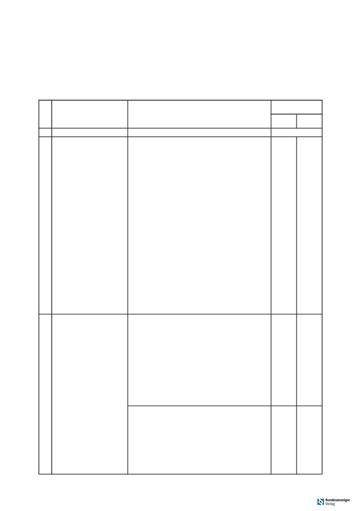
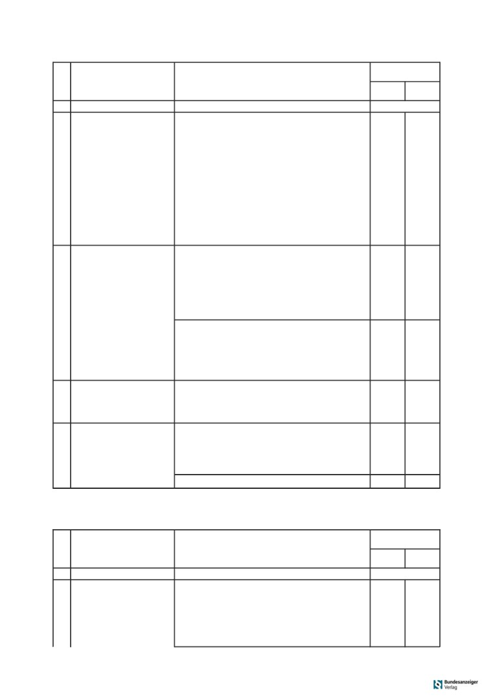
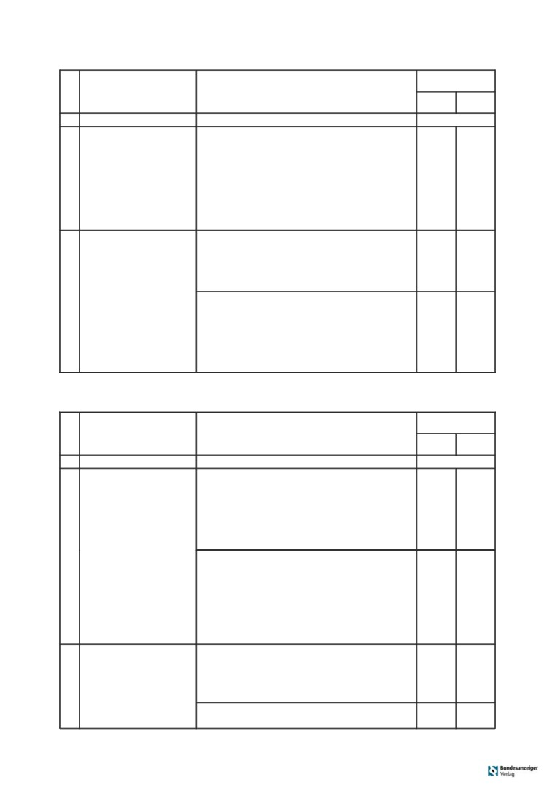
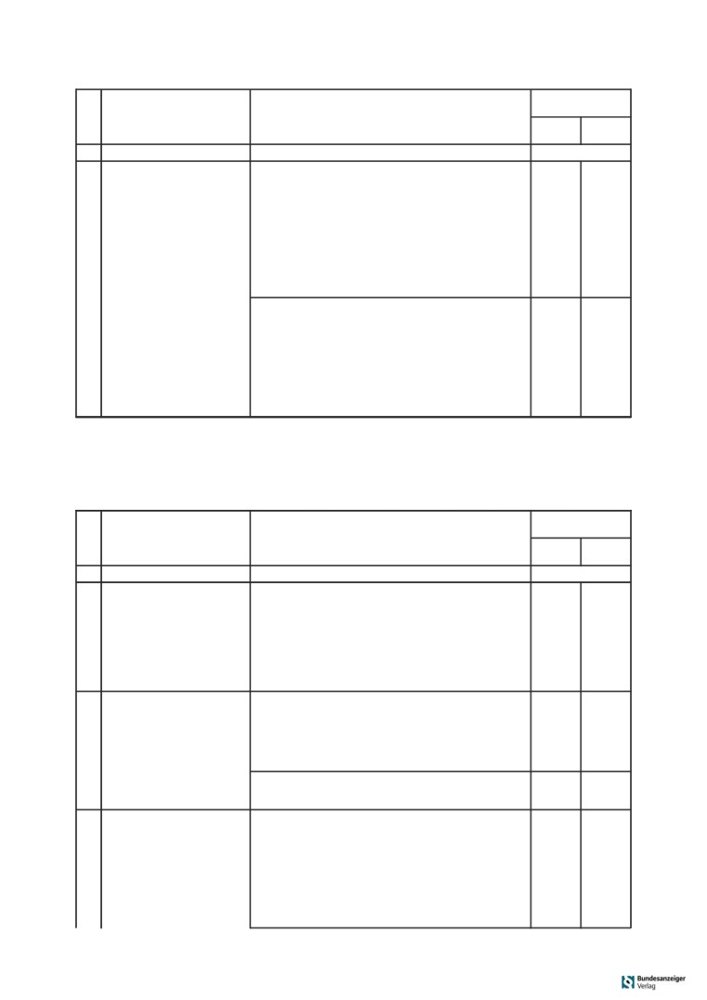
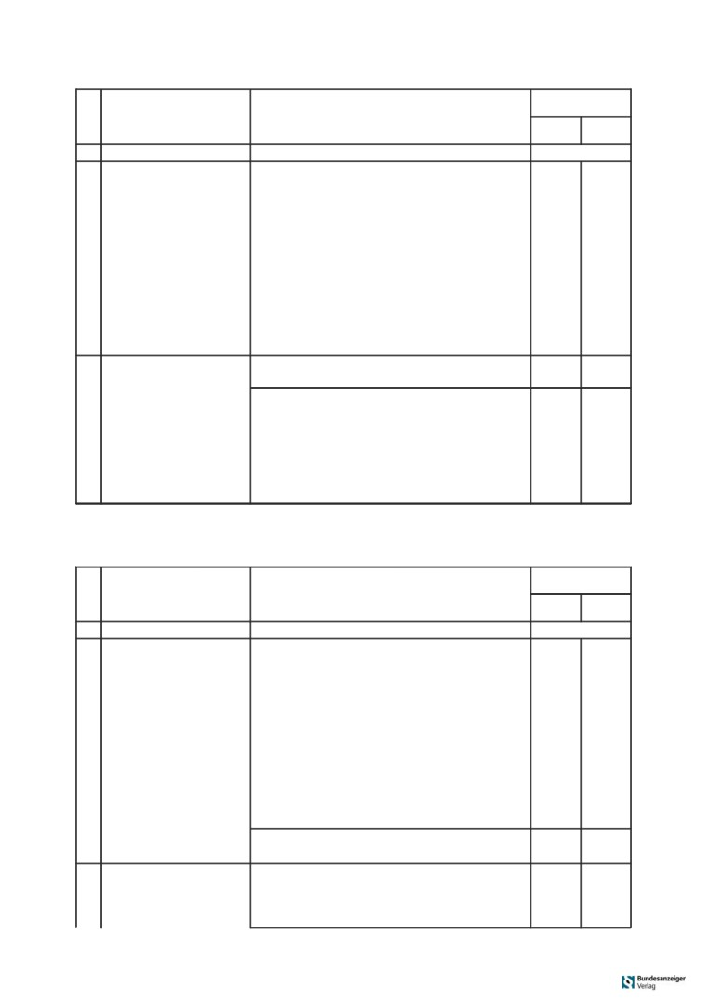
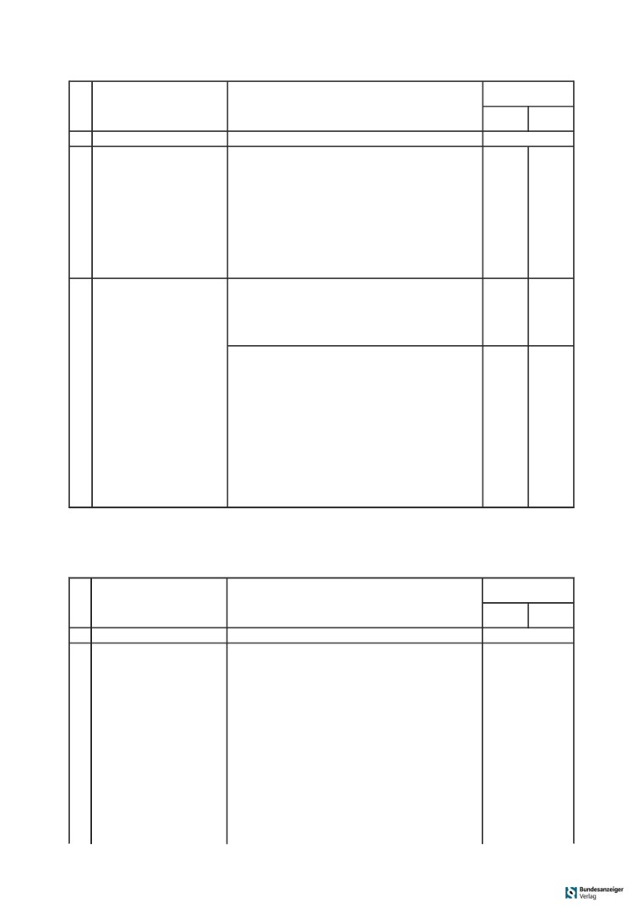
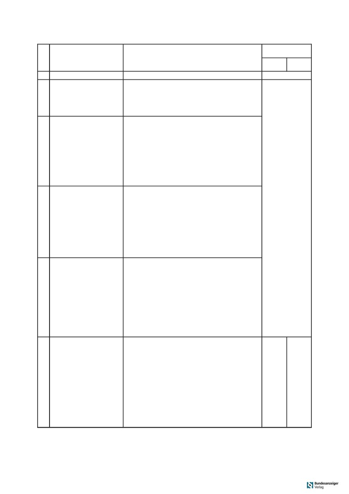

250
Bundesgesetzblatt Jahrgang 2020 Teil I Nr. 9, ausgegeben zu Bonn am 5. März 2020
Verordnung
über die Berufsausbildung zum Fachinformatiker und zur Fachinformatikerin
(Fachinformatikerausbildungsverordnung - FIAusbV)*
Vom 28. Februar
2020
Auf Grund des § 4 Absatz 1 des Berufsbildungs-
§
20
Prüfungsbereich Planen und Umsetzen eines Projektes der
Systemintegration
gesetzes, der zuletzt durch Artikel 436 Nummer 1 der
Verordnung vom 31. August 2015 (BGBl. I S. 1474)
§
21
Prüfungsbereich Konzeption und Administration von
IT-Systemen
geändert worden ist, verordnet das Bundesministerium
§
22
Prüfungsbereich Analyse und Entwicklung von Netzwerken
für Wirtschaft und Energie im Einvernehmen mit dem
§
23
Prüfungsbereich Wirtschafts- und Sozialkunde
Bundesministerium für Bildung und Forschung:
§
24
Gewichtung der Prüfungsbereiche und Anforderungen für
das Bestehen der Abschlussprüfung
Inhaltsübersicht
§
25
Mündliche Ergänzungsprüfung
Abschnitt 1
Gegenstand, Dauer
Unterabschnitt 5
und Gliederung der Berufsausbildung
Teil 2 der Abschlussprüfung
§
1
Staatliche Anerkennung des Ausbildungsberufes
in der Fachrichtung Daten- und Prozessanalyse
§
2
Dauer der Berufsausbildung
§
26
Inhalt von Teil 2
§
3
Gegenstand der Berufsausbildung und Ausbildungsrah-
§
27
Prüfungsbereiche von Teil 2
menplan
§
28
Prüfungsbereich Planen und Durchführen eines Projektes
§
4
Struktur der Berufsausbildung, Ausbildungsberufsbild
der Datenanalyse
§
5
Einsatzgebiet
§
29
Prüfungsbereich Durchführen einer Prozessanalyse
§
6
Ausbildungsplan
§
30
Prüfungsbereich Sicherstellen der Datenqualität
§
31
Prüfungsbereich Wirtschafts- und Sozialkunde
Abschnitt 2
§
32
Gewichtung der Prüfungsbereiche und Anforderungen für
das Bestehen der Abschlussprüfung
Abschlussprüfung
§
33
Mündliche Ergänzungsprüfung
Unterabschnitt 1
Allgemeines
Unterabschnitt 6
§
7
Aufteilung in zwei Teile und Zeitpunkt
Teil 2 der Abschlussprüfung
in der Fachrichtung Digitale Vernetzung
Unterabschnitt 2
§
34
Inhalt von Teil 2
Teil 1 der Abschlussprüfung
§
35
Prüfungsbereiche von Teil 2
§
36
Prüfungsbereich Planen und Umsetzen eines Projektes der
§
8
Inhalt von Teil 1
digitalen Vernetzung
§
9
Prüfungsbereich von Teil 1
§
37
Prüfungsbereich Diagnose und Störungsbeseitigung in
vernetzten Systemen
Unterabschnitt 3
§
38
Prüfungsbereich Betrieb und Erweiterung von vernetzten
Teil 2 der Abschlussprüfung
Systemen
in der Fachrichtung Anwendungsentwicklung
§
39
Prüfungsbereich Wirtschafts- und Sozialkunde
§
10
Inhalt von Teil 2
§
40
Gewichtung der Prüfungsbereiche und Anforderungen für
das Bestehen der Abschlussprüfung
§
11
Prüfungsbereiche von Teil 2
§
41
Mündliche Ergänzungsprüfung
§
12
Prüfungsbereich Planen und Umsetzen eines Software-
projektes
Abschnitt 3
§
13
Prüfungsbereich Planen eines Softwareproduktes
§
14
Prüfungsbereich Entwicklung und Umsetzung von Algo-
Schlussvorschriften
rithmen
§
42
Bestehende Berufsausbildungsverhältnisse
§
15
Prüfungsbereich Wirtschafts- und Sozialkunde
§
43
Inkrafttreten, Außerkrafttreten
§
16
Gewichtung der Prüfungsbereiche und Anforderungen für
das Bestehen der Abschlussprüfung
Anlage: Ausbildungsrahmenplan für die Berufsausbildung zum
Fachinformatiker und zur Fachinformatikerin
§
17
Mündliche Ergänzungsprüfung
Unterabschnitt 4
Abschnitt 1
Teil 2 der Abschlussprüfung
Gegenstand, Dauer
in der Fachrichtung Systemintegration
und Gliederung der Berufsausbildung
§
18
Inhalt von Teil 2
§
19
Prüfungsbereiche von Teil 2
§ 1
Staatliche
* Diese Rechtsverordnung ist eine Ausbildungsordnung im Sinne des
Anerkennung des Ausbildungsberufes
§ 4 des Berufsbildungsgesetzes. Die Ausbildungsordnung und der
damit abgestimmte, von der Ständigen Konferenz der Kultusminister
Der Ausbildungsberuf des Fachinformatikers und der
der Länder in der Bundesrepublik Deutschland beschlossene Rah-
menlehrplan für die Berufsschule werden demnächst im amtlichen
Fachinformatikerin wird nach § 4 Absatz 1 des Berufs-
Teil des Bundesanzeigers veröffentlicht.
bildungsgesetzes staatlich anerkannt.
Bundesgesetzblatt Jahrgang 2020 Teil I Nr.
9, ausgegeben zu Bonn am 5. März 2020
251
§ 2
(3) Die Berufsbildpositionen der berufsprofilgeben-
den Fertigkeiten, Kenntnisse und Fähigkeiten in der
Dauer der Berufsausbildung
Fachrichtung Anwendungsentwicklung sind:
Die Berufsausbildung dauert drei Jahre.
1. Konzipieren und Umsetzen von kundenspezifischen
§ 3
Softwareanwendungen und
Gegenstand der
2. Sicherstellen der Qualität von Softwareanwendungen.
Berufsausbildung und Ausbildungsrahmenplan
(4) Die Berufsbildpositionen der berufsprofilgeben-
(1) Gegenstand der Berufsausbildung sind mindes-
den Fertigkeiten, Kenntnisse und Fähigkeiten in der
tens die im Ausbildungsrahmenplan (Anlage) genann-
Fachrichtung Systemintegration sind:
ten Fertigkeiten, Kenntnisse und Fähigkeiten. Von der
1. Konzipieren und Realisieren von IT-Systemen,
Organisation der Berufsausbildung, wie sie im Ausbil-
dungsrahmenplan vorgegeben ist, darf abgewichen
2. Installieren und Konfigurieren von Netzwerken und
werden, wenn und soweit betriebspraktische Beson-
3. Administrieren von IT-Systemen.
derheiten oder Gründe, die in der Person des oder der
(5) Die Berufsbildpositionen der berufsprofilgeben-
Auszubildenden liegen, die Abweichung erfordern.
den Fertigkeiten, Kenntnisse und Fähigkeiten in der
(2) Die im Ausbildungsrahmenplan genannten Fer-
Fachrichtung Daten- und Prozessanalyse sind:
tigkeiten, Kenntnisse und Fähigkeiten sollen so vermit-
1. Analysieren von Arbeits- und Geschäftsprozessen,
telt werden, dass die Auszubildenden die berufliche
Handlungsfähigkeit nach
§ 1 Absatz 3 des Berufs-
2. Analysieren von Datenquellen und Bereitstellen von
bildungsgesetzes erlangen. Die berufliche Handlungs-
Daten,
fähigkeit schließt insbesondere selbständiges Planen,
3. Nutzen der Daten zur Optimierung von Arbeits- und
Durchführen und Kontrollieren ein.
Geschäftsprozessen sowie zur Optimierung digitaler
Geschäftsmodelle und
§ 4
4. Umsetzen des Datenschutzes und der Schutzziele
Struktur der
der Datensicherheit.
Berufsausbildung, Ausbildungsberufsbild
(6) Die Berufsbildpositionen der berufsprofilgeben-
(1) Die Berufsausbildung gliedert sich in:
den Fertigkeiten, Kenntnisse und Fähigkeiten in der
1. fachrichtungsübergreifende berufsprofilgebende Fer-
Fachrichtung Digitale Vernetzung sind:
tigkeiten, Kenntnisse und Fähigkeiten,
1. Analysieren und Planen von Systemen zur Vernetzung
2. berufsprofilgebende Fertigkeiten, Kenntnisse und
von Prozessen und Produkten,
Fähigkeiten in der Fachrichtung
2. Errichten, Ändern und Prüfen von vernetzten Syste-
a) Anwendungsentwicklung,
men und
b) Systemintegration,
3. Betreiben von vernetzten Systemen und Sicherstel-
c) Daten- und Prozessanalyse und
len der Systemverfügbarkeit.
d) Digitale Vernetzung sowie
(7) Die Berufsbildpositionen der integrativ zu vermit-
3. fachrichtungsübergreifende, integrativ zu vermit-
telnden Fertigkeiten, Kenntnisse und Fähigkeiten sind:
telnde Fertigkeiten, Kenntnisse und Fähigkeiten.
1. Berufsbildung sowie Arbeits- und Tarifrecht,
Die Fertigkeiten, Kenntnisse und Fähigkeiten sind in
2. Aufbau und Organisation des Ausbildungsbetriebes,
Berufsbildpositionen als Teil des Ausbildungsberufs-
bildes gebündelt.
3. Sicherheit und Gesundheitsschutz bei der Arbeit,
(2) Die Berufsbildpositionen der fachrichtungsüber-
4. Umweltschutz und
greifenden berufsprofilgebenden Fertigkeiten, Kennt-
5. vernetztes Zusammenarbeiten unter Nutzung digita-
nisse und Fähigkeiten sind:
ler Medien.
1. Planen, Vorbereiten und Durchführen von Arbeits-
(8) Die Fertigkeiten, Kenntnisse und Fähigkeiten der
aufgaben in Abstimmung mit den kundenspezifi-
in Absatz 2 Nummer 1 bis 7 genannten Berufsbildposi-
schen Geschäfts- und Leistungsprozessen,
tionen sind im Bereich der IT-Berufe berufsübergreifend
2. Informieren und Beraten von Kunden und Kundinnen,
und werden in gleicher Weise auch in den folgenden
3. Beurteilen marktgängiger IT-Systeme und kunden-
Berufsausbildungen vermittelt:
spezifischer Lösungen,
1. in der Berufsausbildung zum Kaufmann für Digi-
4. Entwickeln, Erstellen und Betreuen von IT-Lösungen,
talisierungsmanagement und zur Kauffrau für
Digitalisierungsmanagement nach der Digitalisie-
5. Durchführen und Dokumentieren von qualitäts-
sichernden Maßnahmen,
rungsmanagement-Kaufleute-Ausbildungsverordnung
vom 28. Februar 2020 (BGBl. I S. 290),
6. Umsetzen, Integrieren und Prüfen von Maßnahmen
zur IT-Sicherheit und zum Datenschutz,
2. in der Berufsausbildung zum IT-System-Elektroniker
und zur IT-System-Elektronikerin nach der IT-System-
7. Erbringen der Leistungen und Auftragsabschluss,
Elektroniker-Ausbildungsverordnung vom 28. Feb-
8. Betreiben von IT-Systemen,
ruar 2020 (BGBl. I S. 268) und
9. Inbetriebnehmen von Speicherlösungen und
3. in der Berufsausbildung zum Kaufmann für IT-Sys-
10. Programmieren von Softwarelösungen.
tem-Management und zur Kauffrau für IT-System-
252
Bundesgesetzblatt Jahrgang 2020 Teil I Nr.
9, ausgegeben zu Bonn am 5. März 2020
Management nach der IT-System-Management-
Abschnitt 2
Kaufleute-Ausbildungsverordnung vom 28. Februar
2020
(BGBl. I S. 280).
Abschlussprüfung
§ 5
Unterabschnitt 1
Einsatzgebiet
Allgemeines
(1) In der Fachrichtung Anwendungsentwicklung
sind die Fertigkeiten, Kenntnisse und Fähigkeiten der
§ 7
Berufsbildpositionen nach § 4 Absatz 2, 3 und 7 in
Aufteilung in zwei Teile und Zeitpunkt
einem der folgenden Einsatzgebiete zu vermitteln:
1. kaufmännische Systeme,
(1) Die Abschlussprüfung besteht aus den Teilen 1
und 2.
2. technische Systeme,
(2) Teil 1 findet im vierten Ausbildungshalbjahr statt,
3. Expertensysteme,
Teil 2 am Ende der Berufsausbildung. Den jeweiligen
4. mathematisch-wissenschaftliche Systeme und
Zeitpunkt legt die zuständige Stelle fest.
5. Multimedia-Systeme.
Unterabschnitt 2
(2) In der Fachrichtung Systemintegration sind die
Fertigkeiten, Kenntnisse und Fähigkeiten der Berufs-
Teil
1
bildpositionen nach § 4 Absatz 2, 4 und 7 in einem
der Abschlussprüfung
der folgenden Einsatzgebiete zu vermitteln:
1. Rechenzentren,
§ 8
2. Netzwerke,
Inhalt von Teil 1
3. Client-Server-Architekturen,
Teil 1 der Abschlussprüfung erstreckt sich auf
4. Festnetze und
1. die im Ausbildungsrahmenplan für die ersten
5. Funknetze.
18 Monate genannten Fertigkeiten, Kenntnisse und
Fähigkeiten der Berufsbildpositionen nach § 4 Ab-
(3) In der Fachrichtung Daten- und Prozessanalyse
sind die Fertigkeiten, Kenntnisse und Fähigkeiten der
satz 2 Nummer 1 bis 7 sowie
Berufsbildpositionen nach § 4 Absatz 2, 5 und 7 in
2. den im Berufsschulunterricht zu vermittelnden Lehr-
einem der folgenden Einsatzgebiete zu vermitteln:
stoff, soweit er den im Ausbildungsrahmenplan ge-
1. Prozessoptimierung,
nannten Fertigkeiten, Kenntnissen und Fähigkeiten
entspricht.
2. Prozessmodellierung,
3. Qualitätssicherung,
§ 9
4. Medienanalyse und
Prüfungsbereich von Teil 1
5. Suchdienste.
(1) Teil 1 der Abschlussprüfung findet im Prüfungs-
(4) In der Fachrichtung Digitale Vernetzung sind die
bereich Einrichten eines IT-gestützten Arbeitsplatzes
Fertigkeiten, Kenntnisse und Fähigkeiten der Berufs-
statt.
bildpositionen nach § 4 Absatz 2, 6 und 7 in einem
der folgenden Einsatzgebiete zu vermitteln:
(2) Im Prüfungsbereich Einrichten eines IT-gestütz-
ten Arbeitsplatzes hat der Prüfling nachzuweisen, dass
1. produktionstechnische Systeme,
er in der Lage ist,
2. prozesstechnische Systeme,
1. Kundenbedarfe zielgruppengerecht zu ermitteln,
3. autonome Assistenz- und Transportsysteme und
2. Hard- und Software auszuwählen und ihre Beschaf-
4. Logistiksysteme.
fung einzuleiten,
(5) Der Ausbildungsbetrieb legt fest, in welchem Ein-
3. einen IT-Arbeitsplatz zu konfigurieren und zu testen
satzgebiet die Vermittlung erfolgt. Der Ausbildungs-
und dabei die Bestimmungen und die betrieblichen
betrieb darf mit Zustimmung der zuständigen Stelle je-
Vorgaben zum Datenschutz, zur IT-Sicherheit und
doch auch ein anderes Einsatzgebiet festlegen, wenn in
zur Qualitätssicherung einzuhalten,
diesem Einsatzgebiet die gleichen Fertigkeiten, Kennt-
nisse und Fähigkeiten vermittelt werden.
4. Kunden und Kundinnen in die Nutzung des Arbeits-
platzes einzuweisen und
§ 6
5. die Leistungserbringung zu kontrollieren und zu
Ausbildungsplan
protokollieren.
Die Ausbildenden haben spätestens zu Beginn der
(3) Die Prüfungsaufgaben sollen praxisbezogen sein.
Ausbildung auf der Grundlage des Ausbildungsrahmen-
Der Prüfling hat die Aufgaben schriftlich zu bearbeiten.
plans für jeden Auszubildenden und für jede Auszubil-
dende einen Ausbildungsplan zu erstellen.
(4) Die Prüfungszeit beträgt 90 Minuten.
Bundesgesetzblatt Jahrgang 2020 Teil I Nr.
9, ausgegeben zu Bonn am 5. März 2020
253
Unterabschnitt 3
(3) Im zweiten Teil hat der Prüfling nachzuweisen,
dass er in der Lage ist,
Teil
2
der Abschlussprüfung in der
1. die Arbeitsergebnisse adressatengerecht zu präsen-
Fachrichtung Anwendungsentwicklung
tieren und
2. seine Vorgehensweise bei der Durchführung der be-
§ 10
trieblichen Projektarbeit zu begründen.
Inhalt von Teil 2
Der Prüfling hat die betriebliche Projektarbeit zu präsen-
tieren. Nach der Präsentation wird mit ihm ein Fach-
(1) Teil 2 der Abschlussprüfung erstreckt sich in der
gespräch über die betriebliche Projektarbeit und die
Fachrichtung Anwendungsentwicklung auf
präsentierten Arbeitsergebnisse geführt. Die Prü-
1. die im Ausbildungsrahmenplan genannten Fertig-
fungszeit beträgt insgesamt höchstens
30 Minuten.
keiten, Kenntnisse und Fähigkeiten sowie
Die Präsentation soll höchstens 15 Minuten dauern.
2. den im Berufsschulunterricht zu vermittelnden Lehr-
(4) Bei der Ermittlung des Ergebnisses für den
stoff, soweit er den im Ausbildungsrahmenplan ge-
Prüfungsbereich sind die Bewertungen wie folgt zu
nannten Fertigkeiten, Kenntnissen und Fähigkeiten
gewichten:
entspricht.
1. die Bewertung für den ersten Teil mit 50 Prozent und
(2) In Teil 2 der Abschlussprüfung sollen Fertigkei-
2. die Bewertung für den zweiten Teil mit 50 Prozent.
ten, Kenntnisse und Fähigkeiten, die bereits Gegen-
stand von Teil 1 der Abschlussprüfung waren, nur in-
§ 13
soweit einbezogen werden, als es für die Feststellung
der beruflichen Handlungsfähigkeit erforderlich ist.
Prüfungsbereich
Planen eines Softwareproduktes
§ 11
(1) Im Prüfungsbereich Planen eines Software-
produktes hat der Prüfling nachzuweisen, dass er in
Prüfungsbereiche von Teil 2
der Lage ist,
Teil 2 der Abschlussprüfung findet in der Fachrich-
1. Entwicklungsumgebungen und
-bibliotheken aus-
tung Anwendungsentwicklung in den folgenden Prü-
zuwählen und einzusetzen,
fungsbereichen statt:
2. Programmspezifikationen anwendungsgerecht fest-
1. Planen und Umsetzen eines Softwareprojektes,
zulegen,
2. Planen eines Softwareproduktes,
3. Bedienoberflächen funktionsgerecht und ergono-
3. Entwicklung und Umsetzung von Algorithmen sowie
misch zu konzipieren sowie
4. Wirtschafts- und Sozialkunde.
4. Maßnahmen zur Qualitätskontrolle zu planen und
durchzuführen.
§ 12
(2) Die Prüfungsaufgaben sollen praxisbezogen sein.
Prüfungsbereich
Der Prüfling hat die Aufgaben schriftlich zu bearbeiten.
Planen und Umsetzen eines Softwareprojektes
(3) Die Prüfungszeit beträgt 90 Minuten.
(1) Im Prüfungsbereich Planen und Umsetzen eines
Softwareprojektes besteht die Prüfung aus zwei Teilen.
§ 14
(2) Im ersten Teil hat der Prüfling nachzuweisen,
Prüfungsbereich
dass er in der Lage ist,
Entwicklung und Umsetzung von Algorithmen
(1) Im Prüfungsbereich Entwicklung und Umsetzung
1. kundenspezifische Anforderungen zu analysieren,
von Algorithmen hat der Prüfling nachzuweisen, dass er
2. eine Projektplanung durchzuführen,
in der Lage ist,
3. eine wirtschaftliche Betrachtung des Projektes vor-
1. einen Programmcode zu interpretieren und eine
zunehmen,
Lösung in einer Programmiersprache zu erstellen,
4. eine Softwareanwendung zu erstellen oder an-
2. Algorithmen in eine Programmierlogik zu übertragen
zupassen,
und grafisch darzustellen,
5. die erstellte oder angepasste Softwareanwendung
3. Testszenarien auszuwählen und Testdaten zu gene-
zu testen und ihre Einführung vorzubereiten und
rieren sowie
6. die Planung und Durchführung des Projektes an-
4. Abfragen zur Gewinnung und Manipulation von
forderungsgerecht zu dokumentieren.
Daten zu erstellen.
Der Prüfling hat eine betriebliche Projektarbeit durch-
(2) Die Prüfungsaufgaben sollen praxisbezogen sein.
zuführen und mit praxisbezogenen Unterlagen zu doku-
Der Prüfling hat die Aufgaben schriftlich zu bearbeiten.
mentieren. Vor der Durchführung der betrieblichen Pro-
(3) Die Prüfungszeit beträgt 90 Minuten.
jektarbeit hat er dem Prüfungsausschuss eine Projekt-
beschreibung zur Genehmigung vorzulegen. In der Pro-
§ 15
jektbeschreibung hat er die Ausgangssituation und das
Prüfungsbereich
Projektziel zu beschreiben und eine Zeitplanung aufzu-
Wirtschafts- und Sozialkunde
stellen. Die Prüfungszeit beträgt für die betriebliche
Projektarbeit und für die Dokumentation mit praxis-
(1) Im Prüfungsbereich Wirtschafts- und Sozial-
bezogenen Unterlagen höchstens 80 Stunden.
kunde hat der Prüfling nachzuweisen, dass er in der
254
Bundesgesetzblatt Jahrgang 2020 Teil I Nr.
9, ausgegeben zu Bonn am 5. März 2020
Lage ist, allgemeine wirtschaftliche und gesellschaft-
Ergebnis der mündlichen Ergänzungsprüfung im Ver-
liche Zusammenhänge der Berufs- und Arbeitswelt
hältnis 2:1 zu gewichten.
darzustellen und zu beurteilen.
Unterabschnitt 4
(2) Die Prüfungsaufgaben müssen praxisbezogen
sein. Der Prüfling hat die Aufgaben schriftlich zu be-
2
Teil
arbeiten.
der Abschlussprüfung
in der Fachrichtung Systemintegration
(3) Die Prüfungszeit beträgt 60 Minuten.
§ 18
§ 16
Inhalt von Teil 2
Gewichtung der
Prüfungsbereiche und Anforderungen
(1) Teil 2 der Abschlussprüfung erstreckt sich in der
für das Bestehen der Abschlussprüfung
Fachrichtung Systemintegration auf
(1) Die Bewertungen der einzelnen Prüfungsbereiche
1. die im Ausbildungsrahmenplan genannten Fertig-
sind in der Fachrichtung Anwendungsentwicklung wie
keiten, Kenntnisse und Fähigkeiten sowie
folgt zu gewichten:
2. den im Berufsschulunterricht zu vermittelnden Lehr-
1. Einrichten eines IT-gestützten
stoff, soweit er den im Ausbildungsrahmenplan ge-
Arbeitsplatzes mit
20 Prozent,
nannten Fertigkeiten, Kenntnissen und Fähigkeiten
entspricht.
2. Planen und Umsetzen eines
Softwareprojektes mit
50 Prozent,
(2) In Teil
2 der Abschlussprüfung sollen Fertig-
keiten, Kenntnisse und Fähigkeiten, die bereits Gegen-
3. Planen eines Softwareproduktes mit
10 Prozent,
stand von Teil 1 der Abschlussprüfung waren, nur in-
4. Entwicklung und Umsetzung
soweit einbezogen werden, als es für die Feststellung
von Algorithmen mit
10 Prozent sowie
der beruflichen Handlungsfähigkeit erforderlich ist.
5. Wirtschafts- und Sozialkunde mit
10 Prozent.
§ 19
(2) Die Abschlussprüfung ist bestanden, wenn die
Prüfungsleistungen - auch unter Berücksichtigung einer
Prüfungsbereiche von Teil 2
mündlichen Ergänzungsprüfung nach § 17 - wie folgt
Teil 2 der Abschlussprüfung findet in der Fachrich-
bewertet worden sind:
tung Systemintegration in den folgenden Prüfungs-
bereichen statt:
1. im Gesamtergebnis von Teil 1 und Teil 2 mit mindes-
tens „ausreichend“,
1. Planen und Umsetzen eines Projektes der System-
integration,
2. im Ergebnis von Teil 2 mit mindestens „ausreichend“,
2. Konzeption und Administration von IT-Systemen,
3. in mindestens drei Prüfungsbereichen von Teil 2 mit
mindestens „ausreichend“ und
3. Analyse und Entwicklung von Netzwerken sowie
4. in keinem Prüfungsbereich von Teil 2 mit „ungenü-
4. Wirtschafts- und Sozialkunde.
gend“.
§ 20
§ 17
Prüfungsbereich
Mündliche Ergänzungsprüfung
Planen und Umsetzen
eines Projektes der Systemintegration
(1) Der Prüfling kann in einem Prüfungsbereich eine
mündliche Ergänzungsprüfung beantragen.
(1) Im Prüfungsbereich Planen und Umsetzen eines
Projektes der Systemintegration besteht die Prüfung
(2) Dem Antrag ist stattzugeben,
aus zwei Teilen.
1. wenn er für einen der folgenden Prüfungsbereiche
(2) Im ersten Teil hat der Prüfling nachzuweisen,
gestellt worden ist:
dass er in der Lage ist,
a) Planen eines Softwareproduktes,
1. auftragsbezogene Anforderungen zu analysieren,
b) Entwicklung und Umsetzung von Algorithmen
2. Lösungsalternativen unter Berücksichtigung tech-
oder
nischer, wirtschaftlicher und qualitativer Aspekte
c) Wirtschafts- und Sozialkunde,
vorzuschlagen,
2. wenn der benannte Prüfungsbereich schlechter als
3. Systemänderungen und -erweiterungen durchzufüh-
mit „ausreichend“ bewertet worden ist und
ren und zu übergeben,
3. wenn die mündliche Ergänzungsprüfung für das Be-
4. IT-Systeme einzuführen und zu pflegen,
stehen der Abschlussprüfung den Ausschlag geben
5. Schwachstellen von IT-Systemen zu analysieren und
kann.
Schutzmaßnahmen vorzuschlagen und umzusetzen
Die mündliche Ergänzungsprüfung darf nur in einem
sowie
einzigen Prüfungsbereich durchgeführt werden.
6. Projekte der Systemintegration anforderungsgerecht
(3) Die mündliche Ergänzungsprüfung soll 15 Minu-
zu dokumentieren.
ten dauern.
Der Prüfling hat eine betriebliche Projektarbeit durch-
(4) Bei der Ermittlung des Ergebnisses für den
zuführen und mit praxisbezogenen Unterlagen zu doku-
Prüfungsbereich sind das bisherige Ergebnis und das
mentieren. Vor der Durchführung der Projektarbeit hat
Bundesgesetzblatt Jahrgang 2020 Teil I Nr.
9, ausgegeben zu Bonn am 5. März 2020
255
er dem Prüfungsausschuss eine Projektbeschreibung
§ 23
zur Genehmigung vorzulegen. In der Projektbeschrei-
Prüfungsbereich
bung hat er die Ausgangssituation und das Projektziel
Wirtschafts- und Sozialkunde
zu beschreiben und eine Zeitplanung aufzustellen. Die
(1) Im Prüfungsbereich Wirtschafts- und Sozial-
Prüfungszeit beträgt für die betriebliche Projektarbeit
kunde hat der Prüfling nachzuweisen, dass er in der
und für die Dokumentation mit praxisbezogenen Unter-
Lage ist, allgemeine wirtschaftliche und gesellschaft-
lagen höchstens 40 Stunden.
liche Zusammenhänge der Berufs- und Arbeitswelt
(3) Im zweiten Teil hat der Prüfling nachzuweisen,
darzustellen und zu beurteilen.
dass er in der Lage ist,
(2) Die Prüfungsaufgaben müssen praxisbezogen
1. die Arbeitsergebnisse adressatengerecht zu präsen-
sein. Der Prüfling hat die Aufgaben schriftlich zu be-
tieren und
arbeiten.
2. seine Vorgehensweise bei der Durchführung der be-
(3) Die Prüfungszeit beträgt 60 Minuten.
trieblichen Projektarbeit zu begründen.
Der Prüfling hat die betriebliche Projektarbeit zu präsen-
§ 24
tieren. Nach der Präsentation wird mit ihm ein Fach-
Gewichtung der
gespräch über die betriebliche Projektarbeit und die
Prüfungsbereiche und Anforderungen
präsentierten Arbeitsergebnisse geführt. Die Prü-
für das Bestehen der Abschlussprüfung
fungszeit beträgt insgesamt höchstens
30 Minuten.
(1) Die Bewertungen der einzelnen Prüfungsbereiche
Die Präsentation soll höchstens 15 Minuten dauern.
sind in der Fachrichtung Systemintegration wie folgt zu
(4) Bei der Ermittlung des Ergebnisses für den Prü-
gewichten:
fungsbereich sind die Bewertungen wie folgt zu ge-
1. Einrichten eines IT-gestützten
wichten:
Arbeitsplatzes mit
20 Prozent,
1. die Bewertung für den ersten Teil mit 50 Prozent und
2. Planen und Umsetzen eines Projektes
2. die Bewertung für den zweiten Teil mit 50 Prozent.
der Systemintegration mit
50 Prozent,
3. Konzeption und Administration
§ 21
von IT-Systemen mit
10 Prozent,
Prüfungsbereich
4. Analyse und Entwicklung
Konzeption und Administration von IT-Systemen
von Netzwerken mit
10 Prozent sowie
(1) Im Prüfungsbereich Konzeption und Administra-
5. Wirtschafts- und Sozialkunde mit
10 Prozent.
tion von IT-Systemen hat der Prüfling nachzuweisen,
(2) Die Abschlussprüfung ist bestanden, wenn die
dass er in der Lage ist,
Prüfungsleistungen - auch unter Berücksichtigung einer
1. IT-Systeme für unterschiedliche Anforderungen zu
mündlichen Ergänzungsprüfung nach § 25 - wie folgt
planen und zu konfigurieren,
bewertet worden sind:
2. IT-Systeme zu administrieren und zu betreiben,
1. im Gesamtergebnis von Teil 1 und Teil 2 mit mindes-
3. Speicherlösungen zu integrieren und zu verwalten
tens „ausreichend“,
und
2. im Ergebnis von Teil 2 mit mindestens „ausreichend“,
4. Programme zur automatisierten Systemverwaltung
3. in mindestens drei Prüfungsbereichen von Teil 2 mit
zu erstellen.
mindestens „ausreichend“ und
(2) Die Prüfungsaufgaben sollen praxisbezogen sein.
4. in keinem Prüfungsbereich von Teil 2 mit „ungenü-
Der Prüfling hat die Aufgaben schriftlich zu bearbeiten.
gend“.
(3) Die Prüfungszeit beträgt 90 Minuten.
§ 25
§ 22
Mündliche Ergänzungsprüfung
Prüfungsbereich
(1) Der Prüfling kann in einem Prüfungsbereich eine
Analyse und Entwicklung von Netzwerken
mündliche Ergänzungsprüfung beantragen.
(1) Im Prüfungsbereich Analyse und Entwicklung von
(2) Dem Antrag ist stattzugeben,
Netzwerken hat der Prüfling nachzuweisen, dass er in
1. wenn er für einen der folgenden Prüfungsbereiche
der Lage ist,
gestellt worden ist:
1. Netzwerkprotokolle anwendungsbezogen auszuwäh-
a) Konzeption und Administration von IT-Systemen,
len und einzusetzen,
b) Analyse und Entwicklung von Netzwerken oder
2. Netzwerkkomponenten bedarfsgerecht auszuwählen
c) Wirtschafts- und Sozialkunde,
und zu konfigurieren,
2. wenn der benannte Prüfungsbereich schlechter als
3. die IT-Sicherheit in Netzwerken sicherzustellen und
mit „ausreichend“ bewertet worden ist und
4. den Betrieb und die Verfügbarkeit von Netzwerken
3. wenn die mündliche Ergänzungsprüfung für das Be-
zu überwachen und zu gewährleisten.
stehen der Abschlussprüfung den Ausschlag geben
(2) Die Prüfungsaufgaben sollen praxisbezogen sein.
kann.
Der Prüfling hat die Aufgaben schriftlich zu bearbeiten.
Die mündliche Ergänzungsprüfung darf nur in einem
(3) Die Prüfungszeit beträgt 90 Minuten.
einzigen Prüfungsbereich durchgeführt werden.
256
Bundesgesetzblatt Jahrgang 2020 Teil I Nr.
9, ausgegeben zu Bonn am 5. März 2020
(3) Die mündliche Ergänzungsprüfung soll 15 Minu-
Der Prüfling hat eine betriebliche Projektarbeit durch-
ten dauern.
zuführen und mit praxisbezogenen Unterlagen zu doku-
mentieren. Vor der Durchführung der Projektarbeit hat
(4) Bei der Ermittlung des Ergebnisses für den
er dem Prüfungsausschuss eine Projektbeschreibung
Prüfungsbereich sind das bisherige Ergebnis und das
zur Genehmigung vorzulegen. In der Projektbeschrei-
Ergebnis der mündlichen Ergänzungsprüfung im Ver-
bung hat er die Ausgangssituation und das Projektziel
hältnis 2:1 zu gewichten.
zu beschreiben und eine Zeitplanung aufzustellen. Die
Prüfungszeit beträgt für die betriebliche Projektarbeit
Unterabschnitt 5
und für die Dokumentation mit praxisbezogenen Unter-
Teil
2
lagen höchstens 40 Stunden.
der Abschlussprüfung in der Fach-
(3) Im zweiten Teil hat der Prüfling nachzuweisen,
richtung Daten- und Prozessanalyse
dass er in der Lage ist,
§ 26
1. die Arbeitsergebnisse adressatengerecht zu präsen-
tieren und
Inhalt von Teil 2
2. seine Vorgehensweisen bei der Durchführung der
(1) Teil 2 der Abschlussprüfung erstreckt sich in der
betrieblichen Projektarbeit zu begründen.
Fachrichtung Daten- und Prozessanalyse auf
Der Prüfling hat die betriebliche Projektarbeit zu präsen-
1. die im Ausbildungsrahmenplan genannten Fertig-
tieren. Nach der Präsentation wird mit ihm ein Fach-
keiten, Kenntnisse und Fähigkeiten sowie
gespräch über die betriebliche Projektarbeit und die
2. den im Berufsschulunterricht zu vermittelnden Lehr-
präsentierten Arbeitsergebnisse geführt. Die Prü-
stoff, soweit er den im Ausbildungsrahmenplan ge-
fungszeit beträgt insgesamt höchstens
30 Minuten.
nannten Fertigkeiten, Kenntnissen und Fähigkeiten
Die Präsentation soll höchstens 15 Minuten dauern.
entspricht.
(4) Bei der Ermittlung des Ergebnisses für den
(2) In Teil 2 der Abschlussprüfung sollen Fertigkei-
Prüfungsbereich sind die Bewertungen wie folgt zu
ten, Kenntnisse und Fähigkeiten, die bereits Gegen-
gewichten:
stand von Teil 1 der Abschlussprüfung waren, nur inso-
1. die Bewertung für den ersten Teil mit 50 Prozent und
weit einbezogen werden, als es für die Feststellung der
beruflichen Handlungsfähigkeit erforderlich ist.
2. die Bewertung für den zweiten Teil mit 50 Prozent.
§ 27
§ 29
Prüfungsbereiche von Teil 2
Prüfungsbereich
Durchführen einer Prozessanalyse
Teil 2 der Abschlussprüfung findet in der Fachrich-
tung Daten- und Prozessanalyse in den folgenden
(1) Im Prüfungsbereich Durchführen einer Prozess-
Prüfungsbereichen statt:
analyse hat der Prüfling nachzuweisen, dass er in der
Lage ist,
1. Planen und Durchführen eines Projektes der Daten-
analyse,
1. einen Prozess darzustellen und Anforderungen im
Prozess abzubilden,
2. Durchführen einer Prozessanalyse,
2. Analysewerkzeuge auszuwählen und anzuwenden,
3. Sicherstellen der Datenqualität sowie
3. Maßnahmen zur Prozessoptimierung vorzuschlagen
4. Wirtschafts- und Sozialkunde.
und deren rechtliche Auswirkungen, insbesondere
auf die betrieblichen Abläufe, einzuschätzen und
§ 28
4. Maßnahmen zur Qualitäts- und Wirtschaftlichkeits-
Prüfungsbereich
kontrolle zu planen und durchzuführen.
Planen und Durchführen
eines Projektes der Datenanalyse
(2) Die Prüfungsaufgaben sollen praxisbezogen sein.
Der Prüfling hat die Aufgaben schriftlich zu bearbeiten.
(1) Im Prüfungsbereich Planen und Durchführen eines
Projektes der Datenanalyse besteht die Prüfung aus
(3) Die Prüfungszeit beträgt 90 Minuten.
zwei Teilen.
§ 30
(2) Im ersten Teil hat der Prüfling nachzuweisen,
dass er in der Lage ist,
Prüfungsbereich
Sicherstellen der Datenqualität
1. kundenspezifische Anforderungen zu analysieren,
(1) Im Prüfungsbereich Sicherstellen der Daten-
2. die Projektumsetzung zu planen und dabei die zuge-
qualität hat der Prüfling nachzuweisen, dass er in der
hörigen betrieblichen Prozesse zu berücksichtigen
Lage ist,
und die bestehenden Regeln einzuhalten,
1. Daten zu identifizieren, zu klassifizieren und bereit-
3. Daten zu identifizieren, zu klassifizieren, zu modellie-
zustellen,
ren, unter Nutzung mathematischer Vorhersage-
modelle und statistischer Verfahren zu analysieren
2. die Datenqualität zu prüfen und sicherzustellen,
und die Datenqualität sicherzustellen,
3. den Zugriff auf Daten und deren Verfügbarkeit zu
4. die Analyseergebnisse aufzubereiten und Optimie-
gewährleisten sowie
rungsmöglichkeiten aufzuzeigen sowie
4. anwendungsbezogen sicherzustellen, dass die Be-
5. Projekte der Datenanalyse anforderungsgerecht zu
stimmungen des Datenschutzes und zur Daten-
dokumentieren.
sicherheit eingehalten werden.
Bundesgesetzblatt Jahrgang 2020 Teil I Nr.
9, ausgegeben zu Bonn am 5. März 2020
257
(2) Die Prüfungsaufgaben sollen praxisbezogen sein.
3. wenn die mündliche Ergänzungsprüfung für das Be-
Der Prüfling hat die Aufgaben schriftlich zu bearbeiten.
stehen der Abschlussprüfung den Ausschlag geben
kann.
(3) Die Prüfungszeit beträgt 90 Minuten.
Die mündliche Ergänzungsprüfung darf nur in einem
§ 31
einzigen Prüfungsbereich durchgeführt werden.
Prüfungsbereich
(3) Die mündliche Ergänzungsprüfung soll 15 Minu-
Wirtschafts- und Sozialkunde
ten dauern.
(1) Im Prüfungsbereich Wirtschafts- und Sozial-
(4) Bei der Ermittlung des Ergebnisses für den
kunde hat der Prüfling nachzuweisen, dass er in der
Prüfungsbereich sind das bisherige Ergebnis und das
Lage ist, allgemeine wirtschaftliche und gesellschaft-
Ergebnis der mündlichen Ergänzungsprüfung im Ver-
liche Zusammenhänge der Berufs- und Arbeitswelt
hältnis 2:1 zu gewichten.
darzustellen und zu beurteilen.
Unterabschnitt 6
(2) Die Prüfungsaufgaben müssen praxisbezogen
sein. Der Prüfling hat die Aufgaben schriftlich zu be-
2
Teil
arbeiten.
der Abschlussprüfung in der
Fachrichtung Digitale Vernetzung
(3) Die Prüfungszeit beträgt 60 Minuten.
§ 34
§ 32
Inhalt von Teil 2
Gewichtung der
(1) Teil 2 der Abschlussprüfung erstreckt sich in der
Prüfungsbereiche und Anforderungen
für das Bestehen der Abschlussprüfung
Fachrichtung Digitale Vernetzung auf
(1) Die Bewertungen der einzelnen Prüfungsbereiche
1. die im Ausbildungsrahmenplan genannten Fertig-
keiten, Kenntnisse und Fähigkeiten sowie
sind in der Fachrichtung Daten- und Prozessanalyse
wie folgt zu gewichten:
2. den im Berufsschulunterricht zu vermittelnden Lehr-
stoff, soweit er den im Ausbildungsrahmenplan ge-
1. Einrichten eines IT-gestützten
nannten Fertigkeiten, Kenntnissen und Fähigkeiten
Arbeitsplatzes mit
20 Prozent,
entspricht.
2. Planen und Durchführen eines
(2) In Teil 2 der Abschlussprüfung sollen Fertigkei-
Projektes der Datenanalyse mit
50 Prozent,
ten, Kenntnisse und Fähigkeiten, die bereits Gegen-
3. Durchführen einer Prozessanalyse
stand von Teil 1 der Abschlussprüfung waren, nur in-
mit
10 Prozent,
soweit einbezogen werden, als es für die Feststellung
4. Sicherstellen der Datenqualität mit 10 Prozent sowie
der beruflichen Handlungsfähigkeit erforderlich ist.
5. Wirtschafts- und Sozialkunde mit
10 Prozent.
§ 35
(2) Die Abschlussprüfung ist bestanden, wenn die
Prüfungsbereiche von Teil 2
Prüfungsleistungen - auch unter Berücksichtigung einer
mündlichen Ergänzungsprüfung nach § 33 - wie folgt
Teil 2 der Abschlussprüfung findet in der Fachrich-
bewertet worden sind:
tung Digitale Vernetzung in den folgenden Prüfungs-
bereichen statt:
1. im Gesamtergebnis von Teil 1 und Teil 2 mit mindes-
tens „ausreichend“,
1. Planen und Umsetzen eines Projektes der digitalen
Vernetzung,
2. im Ergebnis von Teil 2 mit mindestens „ausreichend“,
2. Diagnose und Störungsbeseitigung in vernetzten
3. in mindestens drei Prüfungsbereichen von Teil 2 mit
Systemen,
mindestens „ausreichend“ und
3. Betrieb und Erweiterung von vernetzten Systemen
4. in keinem Prüfungsbereich von Teil 2 mit „ungenü-
sowie
gend“.
4. Wirtschafts- und Sozialkunde.
§ 33
§ 36
Mündliche Ergänzungsprüfung
Prüfungsbereich
(1) Der Prüfling kann in einem Prüfungsbereich eine
Planen und Umsetzen
mündliche Ergänzungsprüfung beantragen.
eines Projektes der digitalen Vernetzung
(2) Dem Antrag ist stattzugeben,
(1) Im Prüfungsbereich Planen und Umsetzen eines
1. wenn er für einen der folgenden Prüfungsbereiche
Projektes der digitalen Vernetzung besteht die Prüfung
gestellt worden ist:
aus zwei Teilen.
a) Durchführen einer Prozessanalyse,
(2) Im ersten Teil hat der Prüfling nachzuweisen,
dass er in der Lage ist,
b) Sicherstellen der Datenqualität oder
1. hardware- und softwarebasierte Schnittstellen und
c) Wirtschafts- und Sozialkunde,
Komponenten in bestehende Infrastrukturen einzu-
2. wenn der benannte Prüfungsbereich schlechter als
binden und dabei die Anforderungen an die Informa-
mit „ausreichend“ bewertet worden ist und
tionssicherheit zu erfüllen,
258
Bundesgesetzblatt Jahrgang 2020 Teil I Nr.
9, ausgegeben zu Bonn am 5. März 2020
2. eine vorhandene Systemarchitektur über mehrere
(2) Die Prüfungsaufgaben sollen praxisbezogen sein.
Prozessebenen und über deren Prozessabläufe zu
Der Prüfling hat die Aufgaben schriftlich zu bearbeiten.
bewerten, zu dokumentieren und zu visualisieren,
(3) Die Prüfungszeit beträgt 90 Minuten.
3. Schnittstellen unterschiedlicher Prozesse und
Systeme zu implementieren, zu konfigurieren und
§ 38
in Betrieb zu nehmen,
Prüfungsbereich
4. Gesamtzusammenhänge in heterogenen IT-Land-
Betrieb und Erweiterung von vernetzten Systemen
schaften zu bewerten und zu beschreiben sowie
(1) Im Prüfungsbereich Betrieb und Erweiterung von
5. Übertragungssysteme anforderungsgerecht auszu-
vernetzten Systemen hat der Prüfling nachzuweisen,
wählen, zu konfigurieren und in die Gesamtinfra-
dass er in der Lage ist,
struktur zu integrieren.
1. technische Lösungskonzepte zur Einbindung von
Der Prüfling hat eine betriebliche Projektarbeit durch-
heterogenen Systemen sowie Protokollen in das
zuführen und mit praxisbezogenen Unterlagen zu doku-
Gesamtsystem zu bewerten und umzusetzen,
mentieren. Vor der Durchführung der Projektarbeit hat
2. die Kommunikation der unterschiedlichen Prozesse
er dem Prüfungsausschuss eine Projektbeschreibung
und Ebenen der Informationsverarbeitung zu prüfen
zur Genehmigung vorzulegen. In der Projektbeschrei-
und zu dokumentieren sowie deren Betrieb sicher-
bung hat er die Ausgangssituation und das Projektziel
zustellen,
zu beschreiben und eine Zeitplanung aufzustellen. Die
Prüfungszeit beträgt für die betriebliche Projektarbeit
3. Systemressourcen zu überwachen, deren Kennzah-
und für die Dokumentation mit praxisbezogenen Unter-
len zu bewerten und Maßnahmen zur Sicherstellung
lagen höchstens 40 Stunden.
des Betriebes der vernetzten Systeme zu ergreifen
und
(3) Im zweiten Teil hat der Prüfling nachzuweisen,
dass er in der Lage ist,
4. anwendungsspezifische Netzwerkinfrastrukturen und
Protokolle zu beurteilen, anzupassen sowie zu er-
1. die Arbeitsergebnisse adressatengerecht zu präsen-
weitern.
tieren und
(2) Die Prüfungsaufgaben sollen praxisbezogen sein.
2. seine Vorgehensweisen bei der Durchführung der
Der Prüfling hat die Aufgaben schriftlich zu bearbeiten.
betrieblichen Projektarbeit zu begründen.
(3) Die Prüfungszeit beträgt 90 Minuten.
Der Prüfling hat die betriebliche Projektarbeit zu präsen-
tieren. Nach der Präsentation wird mit ihm über die be-
§ 39
triebliche Projektarbeit und die präsentierten Arbeits-
ergebnisse ein Fachgespräch geführt. Die Prüfungszeit
Prüfungsbereich
beträgt insgesamt höchstens 30 Minuten. Die Präsen-
Wirtschafts- und Sozialkunde
tation soll höchstens 15 Minuten dauern.
(1) Im Prüfungsbereich Wirtschafts- und Sozial-
(4) Bei der Ermittlung des Ergebnisses für den
kunde hat der Prüfling nachzuweisen, dass er in der
Prüfungsbereich sind die Bewertungen wie folgt zu
Lage ist, allgemeine wirtschaftliche und gesellschaft-
gewichten:
liche Zusammenhänge der Berufs- und Arbeitswelt
darzustellen und zu beurteilen.
1. die Bewertung für den ersten Teil mit 50 Prozent und
(2) Die Prüfungsaufgaben müssen praxisbezogen
2. die Bewertung für den zweiten Teil mit 50 Prozent.
sein. Der Prüfling hat die Aufgaben schriftlich zu be-
arbeiten.
§ 37
(3) Die Prüfungszeit beträgt 60 Minuten.
Prüfungsbereich
Diagnose und Störungs-
§ 40
beseitigung in vernetzten Systemen
Gewichtung der
(1) Im Prüfungsbereich Diagnose und Störungs-
Prüfungsbereiche und Anforderungen
beseitigung in vernetzten Systemen hat der Prüfling
für das Bestehen der Abschlussprüfung
nachzuweisen, dass er in der Lage ist,
(1) Die Bewertungen der einzelnen Prüfungsbereiche
1. Soft- und Hardware zur Sicherstellung des Betriebes
sind in der Fachrichtung Digitale Vernetzung wie folgt
der Gesamtinfrastruktur und zur Störungsbeseiti-
zu gewichten:
gung einzusetzen und Testergebnisse auszuwerten,
1. Einrichten eines IT-gestützten
2. Störungen in der Gesamtinfrastruktur zu lokalisieren
Arbeitsplatzes mit
20 Prozent,
und einzugrenzen sowie Lösungsmaßnahmen ein-
2. Planen und Umsetzen eines Projektes
zuleiten und umzusetzen,
der digitalen Vernetzung mit
50 Prozent,
3. Diagnose- und Prozessdaten auszuwerten, zu
3. Diagnose und Störungsbeseitigung
analysieren und Maßnahmen abzuleiten und
in vernetzten Systemen mit
10 Prozent,
4. kunden- und anwendungsspezifische IT-Sicher-
4. Betrieb und Erweiterung
heitsmaßnahmen im Gesamtsystem zu konfigurieren
von vernetzten Systemen mit
10 Prozent sowie
und zu implementieren, Schwachstellen zu bewerten
und Maßnahmen einzuleiten.
5. Wirtschafts- und Sozialkunde mit
10 Prozent.
Bundesgesetzblatt Jahrgang 2020 Teil I Nr.
9, ausgegeben zu Bonn am 5. März 2020
259
(2) Die Abschlussprüfung ist bestanden, wenn die
Die mündliche Ergänzungsprüfung darf nur in einem
Prüfungsleistungen - auch unter Berücksichtigung einer
einzigen Prüfungsbereich durchgeführt werden.
mündlichen Ergänzungsprüfung nach § 41 - wie folgt
(3) Die mündliche Ergänzungsprüfung soll 15 Minu-
bewertet worden sind:
ten dauern.
1. im Gesamtergebnis von Teil 1 und Teil 2 mit mindes-
(4) Bei der Ermittlung des Ergebnisses für den
tens „ausreichend“,
Prüfungsbereich sind das bisherige Ergebnis und das
2. im Ergebnis von Teil 2 mit mindestens „ausreichend“,
Ergebnis der mündlichen Ergänzungsprüfung im Ver-
hältnis 2:1 zu gewichten.
3. in mindestens drei Prüfungsbereichen von Teil 2 mit
mindestens „ausreichend“ und
Abschnitt 3
4. in keinem Prüfungsbereich von Teil 2 mit „ungenü-
Schlussvorschriften
gend“.
§ 41
§ 42
Mündliche Ergänzungsprüfung
Bestehende Berufsausbildungsverhältnisse
Berufsausbildungsverhältnisse zum Fachinformatiker/
(1) Der Prüfling kann in einem Prüfungsbereich eine
zur Fachinformatikerin, die bei Inkrafttreten dieser Ver-
mündliche Ergänzungsprüfung beantragen.
ordnung bereits bestehen, können nach den Vorschrif-
(2) Dem Antrag ist stattzugeben,
ten dieser Verordnung unter Anrechnung der bisher ab-
1. wenn er für einen der folgenden Prüfungsbereiche
solvierten Ausbildungszeit fortgesetzt werden, wenn
gestellt worden ist:
die Vertragsparteien dies vereinbaren und der oder die
Auszubildende noch nicht die Zwischenprüfung ab-
a) Diagnose und Störungsbeseitigung in vernetzten
Systemen,
solviert hat.
b) Betrieb und Erweiterung von vernetzten Systemen
§ 43
oder
Inkrafttreten, Außerkrafttreten
c) Wirtschafts- und Sozialkunde,
Diese Verordnung tritt am 1. August 2020 in Kraft.
2. wenn der benannte Prüfungsbereich schlechter als
Gleichzeitig tritt die Verordnung über die Berufsausbil-
mit „ausreichend“ bewertet worden ist und
dung im Bereich der Informations- und Telekommuni-
3. wenn die mündliche Ergänzungsprüfung für das Be-
kationstechnik vom 10. Juli 1997 (BGBl. I S. 1741), die
stehen der Abschlussprüfung den Ausschlag geben
durch Artikel
1 der Verordnung vom 28. Mai 2018
kann.
(BGBl. I S. 654) geändert worden ist, außer Kraft.
Berlin, den 28. Februar 2020
Der Bundesminister
für Wirtschaft und Energie
In Vertretung
Nussbaum

260
Bundesgesetzblatt Jahrgang 2020 Teil I Nr. 9, ausgegeben zu Bonn am 5. März 2020
Anlage
(zu § 3 Absatz 1)
Ausbildungsrahmenplan
für die Berufsausbildung zum Fachinformatiker und zur Fachinformatikerin
Abschnitt A: fachrichtungsübergreifende berufsprofilgebende Fertigkeiten, Kenntnisse und Fähigkeiten
Zeitliche Richtwerte
in Wochen im
Lfd.
Teil des
Zu vermittelnde
Nr.
Ausbildungsberufsbildes
Fertigkeiten, Kenntnisse und Fähigkeiten
1. bis 18.
19. bis 36.
Monat
Monat
1
2
3
4
1
Planen, Vorbereiten und
a)
Grundsätze und Methoden des Projektmanagements
Durchführen von Arbeits-
anwenden
aufgaben in Abstimmung
b)
Auftragsunterlagen und Durchführbarkeit des Auf-
mit den kundenspezifischen
trags prüfen, insbesondere in Hinblick auf rechtliche,
Geschäfts- und Leistungs-
wirtschaftliche und terminliche Vorgaben, und den
prozessen
Auftrag mit den betrieblichen Prozessen und Mög-
(§ 4 Absatz 2 Nummer 1)
lichkeiten abstimmen
c)
Zeitplan und Reihenfolge der Arbeitsschritte für den
eigenen Arbeitsbereich festlegen
d)
Termine planen und abstimmen sowie Terminüber-
wachung durchführen
e)
Probleme analysieren und als Aufgabe definieren so-
12
wie Lösungsalternativen entwickeln und beurteilen
f)
Arbeits- und Organisationsmittel wirtschaftlich und
ökologisch unter Berücksichtigung der vorhandenen
Ressourcen und der Budgetvorgaben einsetzen
g)
Aufgaben im Team sowie mit internen und externen
Kunden und Kundinnen planen und abstimmen
h)
betriebswirtschaftlich relevante Daten erheben und
bewerten und dabei Geschäfts- und Leistungspro-
zesse berücksichtigen
i)
eigene Vorgehensweise sowie die Aufgabendurch-
führung im Team reflektieren und bei der Verbesse-
rung der Arbeitsprozesse mitwirken
2
Informieren und Beraten
a)
im Rahmen der Marktbeobachtung Preise, Leistun-
von Kunden und Kundinnen
gen und Konditionen von Wettbewerbern vergleichen
(§ 4 Absatz 2 Nummer 2)
b)
Bedarfe von Kunden und Kundinnen feststellen sowie
Zielgruppen unterscheiden
c)
Kunden und Kundinnen unter Beachtung von Kom-
munikationsregeln informieren sowie Sachverhalte
3
präsentieren und dabei deutsche und englische
Fachbegriffe anwenden
d)
Maßnahmen für Marketing und Vertrieb unterstützen
e)
Informationsquellen auch in englischer Sprache auf-
gabenbezogen auswerten und für die Kundeninfor-
mation nutzen
f)
Gespräche situationsgerecht führen und Kunden und
Kundinnen unter Berücksichtigung der Kunden-
interessen beraten
g)
Kundenbeziehungen unter Beachtung rechtlicher
Regelungen und betrieblicher Grundsätze gestalten
2
h)
Daten und Sachverhalte interpretieren, multimedial
aufbereiten und situationsgerecht unter Nutzung
digitaler Werkzeuge und unter Berücksichtigung der
betrieblichen Vorgaben präsentieren
Bundesgesetzblatt Jahrgang 2020 Teil I Nr. 9, ausgegeben zu Bonn am 5. März
2020
261
Zeitliche Richtwerte
Lfd.
Teil des
Zu vermittelnde
in Wochen im
Nr.
Ausbildungsberufsbildes
Fertigkeiten, Kenntnisse und Fähigkeiten
1. bis 18.
19. bis 36.
Monat
Monat
1
2
3
4
3
Beurteilen marktgängiger
a)
marktgängige IT-Systeme für unterschiedliche Ein-
IT-Systeme und kunden-
satzbereiche hinsichtlich Leistungsfähigkeit, Wirt-
spezifischer Lösungen
schaftlichkeit und Barrierefreiheit beurteilen
(§ 4 Absatz 2 Nummer 3)
10
b)
Angebote zu IT-Komponenten, IT-Produkten und
IT-Dienstleistungen einholen und bewerten sowie
Spezifikationen und Konditionen vergleichen
c)
technologische Entwicklungstrends von IT-Systemen
feststellen sowie ihre wirtschaftlichen, sozialen und
beruflichen Auswirkungen aufzeigen
5
d)
Veränderungen von Einsatzfeldern für IT-Systeme
aufgrund technischer, wirtschaftlicher und gesell-
schaftlicher Entwicklungen feststellen
4
Entwickeln, Erstellen und
a)
IT-Systeme zur Bearbeitung betrieblicher Fachaufga-
Betreuen von IT-Lösungen
ben analysieren sowie unter Beachtung insbesondere
(§ 4 Absatz 2 Nummer 4)
von Lizenzmodellen, Urheberrechten und Barriere-
freiheit konzeptionieren, konfigurieren, testen und
dokumentieren
5
b)
Programmiersprachen, insbesondere prozedurale
und objektorientierte Programmiersprachen, unter-
scheiden
c)
systematisch Fehler erkennen, analysieren und be-
heben
d)
Algorithmen formulieren und Anwendungen in einer
Programmiersprache erstellen
7
e)
Datenbankmodelle unterscheiden, Daten organisie-
ren und speichern sowie Abfragen erstellen
5
Durchführen und Dokumen-
a)
betriebliche Qualitätssicherungssysteme im eigenen
tieren von qualitätssichernden
Arbeitsbereich anwenden und Qualitätssicherungs-
Maßnahmen
4
maßnahmen projektbegleitend durchführen und doku-
(§ 4 Absatz 2 Nummer 5)
mentieren
b)
Ursachen von Qualitätsmängeln systematisch fest-
stellen, beseitigen und dokumentieren
c)
im Rahmen eines Verbesserungsprozesses die Ziel-
8
erreichung kontrollieren, insbesondere einen Soll-Ist-
Vergleich durchführen
6
Umsetzen, Integrieren und
a)
betriebliche Vorgaben und rechtliche Regelungen zur
Prüfen von Maßnahmen zur
IT-Sicherheit und zum Datenschutz einhalten
IT-Sicherheit und zum
b)
Sicherheitsanforderungen von IT-Systemen analysie-
6
Datenschutz
ren und Maßnahmen zur IT-Sicherheit ableiten, ab-
(§ 4 Absatz 2 Nummer 6)
stimmen, umsetzen und evaluieren
c)
Bedrohungsszenarien erkennen und Schadenspoten-
ziale unter Berücksichtigung wirtschaftlicher und
technischer Kriterien einschätzen
d)
Kunden und Kundinnen im Hinblick auf Anforderun-
gen an die IT-Sicherheit und an den Datenschutz
6
beraten
e)
Wirksamkeit und Effizienz der umgesetzten Maßnah-
men zur IT-Sicherheit und zum Datenschutz prüfen

262
Bundesgesetzblatt Jahrgang 2020 Teil I Nr. 9, ausgegeben zu Bonn am 5. März
2020
Zeitliche Richtwerte
Lfd.
Teil des
Zu vermittelnde
in Wochen im
Nr.
Ausbildungsberufsbildes
Fertigkeiten, Kenntnisse und Fähigkeiten
1. bis 18.
19. bis 36.
Monat
Monat
1
2
3
4
7
Erbringen der Leistungen
a)
Leistungen nach betrieblichen und vertraglichen
und Auftragsabschluss
Vorgaben dokumentieren
(§ 4 Absatz 2 Nummer 7)
b)
Leistungserbringung unter Berücksichtigung der orga-
nisatorischen und terminlichen Vorgaben mit Kunden
und Kundinnen abstimmen und kontrollieren
c)
Veränderungsprozesse begleiten und unterstützen
d)
Kunden und Kundinnen in die Nutzung von Produk-
7
ten und Dienstleistungen einweisen
e)
Leistungen und Dokumentationen an Kunden und
Kundinnen übergeben sowie Abnahmeprotokolle an-
fertigen
f)
Kosten für erbrachte Leistungen erfassen sowie im
Zeitvergleich und im Soll-Ist-Vergleich bewerten
8
Betreiben von IT-Systemen
a)
Netzwerkkonzepte für unterschiedliche Anwen-
(§ 4 Absatz 2 Nummer 8)
dungsgebiete unterscheiden
b)
Datenaustausch von vernetzten Systemen realisieren
c)
Verfügbarkeit und Ausfallwahrscheinlichkeiten analy-
3
sieren und Lösungsvorschläge unterbreiten
d)
Maßnahmen zur präventiven Wartung und zur
Störungsvermeidung einleiten und durchführen
e)
Störungsmeldungen aufnehmen und analysieren
sowie Maßnahmen zur Störungsbeseitigung ergreifen
f)
Dokumentationen zielgruppengerecht und barrierefrei
3
anfertigen, bereitstellen und pflegen, insbesondere
technische Dokumentationen, System- sowie Be-
nutzerdokumentationen
9
Inbetriebnehmen von
a)
Sicherheitsmechanismen, insbesondere Zugriffsmög-
Speicherlösungen
lichkeiten und -rechte, festlegen und implementieren
(§ 4 Absatz 2 Nummer 9)
5
b)
Speicherlösungen, insbesondere Datenbanksysteme,
integrieren
10
Programmieren von
a)
Programmspezifikationen festlegen, Datenmodelle
Softwarelösungen
und Strukturen aus fachlichen Anforderungen ab-
(§ 4 Absatz 2 Nummer 10)
leiten sowie Schnittstellen festlegen
5
b)
Programmiersprachen auswählen und unterschied-
liche Programmiersprachen anwenden
c)
Teilaufgaben von IT-Systemen automatisieren
10
Abschnitt B: berufsprofilgebende Fertigkeiten, Kenntnisse und Fähigkeiten in der Fachrichtung Anwendungs-
entwicklung
Zeitliche Richtwerte
in Wochen im
Lfd.
Teil des
Zu vermittelnde
Nr.
Ausbildungsberufsbildes
Fertigkeiten, Kenntnisse und Fähigkeiten
1. bis 18.
19. bis 36.
Monat
Monat
1
2
3
4
1
Konzipieren und Umsetzen
a) Vorgehensmodelle und -methoden sowie Entwick-
von kundenspezifischen
lungsumgebungen und -bibliotheken auswählen und
Softwareanwendungen
einsetzen
(§ 4 Absatz 3 Nummer 1)
15
b) Analyse- und Designverfahren anwenden
c) Benutzerschnittstellen ergonomisch gestalten und an
Kundenanforderungen anpassen

Bundesgesetzblatt Jahrgang 2020 Teil I Nr. 9, ausgegeben zu Bonn am 5. März
2020
263
Zeitliche Richtwerte
Lfd.
Teil des
Zu vermittelnde
in Wochen im
Nr.
Ausbildungsberufsbildes
Fertigkeiten, Kenntnisse und Fähigkeiten
1. bis 18.
19. bis 36.
Monat
Monat
1
2
3
4
d)
Anwendungslösungen unter Berücksichtigung der
bestehenden Systemarchitektur entwerfen und
realisieren
e)
bestehende Anwendungslösungen anpassen
f)
Datenaustausch zwischen Systemen realisieren und
25
unterschiedliche Datenquellen nutzen
g)
komplexe Abfragen aus unterschiedlichen Daten-
quellen durchführen und Datenbestandsberichte er-
stellen
2
Sicherstellen der Qualität
a)
Sicherheitsaspekte bei der Entwicklung von Soft-
von Softwareanwendungen
wareanwendungen berücksichtigen
(§ 4 Absatz 3 Nummer 2)
b)
Datenintegrität mithilfe von Werkzeugen sicherstel-
5
len
c)
Modultests erstellen und durchführen
d)
Werkzeuge zur Versionsverwaltung einsetzen
e)
Testkonzepte erstellen und Tests durchführen sowie
Testergebnisse bewerten und dokumentieren
f)
Daten und Sachverhalte aus Tests multimedial auf-
7
bereiten und situationsgerecht unter Nutzung digita-
ler Werkzeuge und unter Beachtung der betrieblichen
Vorgaben präsentieren
Abschnitt C: berufsprofilgebende Fertigkeiten, Kenntnisse und Fähigkeiten in der Fachrichtung Systemintegration
Zeitliche Richtwerte
in Wochen im
Lfd.
Teil des
Zu vermittelnde
Nr.
Ausbildungsberufsbildes
Fertigkeiten, Kenntnisse und Fähigkeiten
1. bis 18.
19. bis 36.
Monat
Monat
1
2
3
4
1
Konzipieren und Realisieren
a)
Systemlösungen entsprechend den kundenspezifi-
von IT-Systemen
schen Anforderungen unter Berücksichtigung von
(§ 4 Absatz 4 Nummer 1)
Sicherheitsaspekten konzipieren
b)
IT-Systeme auswählen, installieren und konfigu-
8
rieren
c)
externe IT-Ressourcen bewerten, auswählen und in
ein IT-System integrieren
d)
Kompatibilitätsprobleme von IT-Systemen und System-
komponenten beurteilen und lösen
e)
Testkonzepte erstellen sowie Tests durchführen und
dokumentieren
12
f)
Systemübergabe planen und mit den beteiligten
Organisationseinheiten sowie Kunden und Kundin-
nen abstimmen und durchführen
g)
Datenübernahmen planen und durchführen
2
Installieren und Konfigurieren
a)
Netzwerkprotokolle und
-schnittstellen für unter-
von Netzwerken
schiedliche Anwendungsbereiche bewerten und aus-
(§ 4 Absatz 4 Nummer 2)
wählen
5
b)
Netzwerkkomponenten auswählen, installieren und
konfigurieren
c)
Systeme zur IT-Sicherheit in Netzwerken implemen-
6
tieren und dokumentieren

264
Bundesgesetzblatt Jahrgang 2020 Teil I Nr. 9, ausgegeben zu Bonn am 5. März 2020
Zeitliche Richtwerte
Lfd.
Teil des
Zu vermittelnde
in Wochen im
Nr.
Ausbildungsberufsbildes
Fertigkeiten, Kenntnisse und Fähigkeiten
1. bis 18.
19. bis 36.
Monat
Monat
1
2
3
4
3
Administrieren von
a) Richtlinien zur Nutzung von IT-Systemen erstellen
IT-Systemen
und einführen
(§ 4 Absatz 4 Nummer 3)
b) Lizenzrechte verwalten und die Einhaltung von Lizenz-
bestimmungen überwachen
c) Berechtigungskonzepte entwerfen, abstimmen und
7
umsetzen
d) Systemaktualisierungen evaluieren und durchführen
e) Konzepte zur Datensicherung und -archivierung er-
stellen und umsetzen
f) Konzepte zur Daten- und Systemwiederherstellung
erstellen und umsetzen
g) Systemauslastung überwachen und Ressourcen ver-
walten
14
h) Systemverhalten überwachen, bewerten und Maß-
nahmen ergreifen
i)
Benutzeranfragen aufnehmen, analysieren und be-
arbeiten
Abschnitt D: berufsprofilgebende Fertigkeiten, Kenntnisse und Fähigkeiten in der Fachrichtung Daten- und
Prozessanalyse
Zeitliche Richtwerte
in Wochen im
Lfd.
Teil des
Zu vermittelnde
Nr.
Ausbildungsberufsbildes
Fertigkeiten, Kenntnisse und Fähigkeiten
1. bis 18.
19. bis 36.
Monat
Monat
1
2
3
4
1
Analysieren von Arbeits- und
a)
betriebs- und produktionswirtschaftliche Geschäfts-
Geschäftsprozessen
prozesse und ihr Zusammenwirken im Unternehmen
(§ 4 Absatz 5 Nummer 1)
analysieren
b)
Anforderungen in einer Prozessdarstellung abbil-
8
den
c)
Werkzeuge der Prozessoptimierung vergleichen und
vorschlagen
2
Analysieren von Datenquellen
a)
Daten aus heterogenen Datenquellen identifizieren
und Bereitstellen von Daten
und klassifizieren
(§ 4 Absatz 5 Nummer 2)
b)
Berechtigung zur Nutzung und zur Verknüpfung von
5
Daten prüfen sowie entsprechende Maßnahmen
ableiten
c)
technische Voraussetzungen zur Übernahme von
5
Daten sicherstellen und Daten bereitstellen
3
Nutzen der Daten zur
a)
Daten auf Qualität, insbesondere auf Plausibilität,
Optimierung von Arbeits- und
Quantität, Redundanz, Vollständigkeit und Validi-
Geschäftsprozessen sowie
tät prüfen, Ergebnisse dokumentieren und bei Ab-
zur Optimierung digitaler
weichungen vom Sollzustand Maßnahmen, ins-
Geschäftsmodelle
besondere zur Verbesserung der Datenqualität, vor-
6
(§ 4 Absatz 5 Nummer 3)
schlagen
b)
Auffindbarkeit, Zugänglichkeit, Interoperabilität, Wie-
derverwendbarkeit von Daten sicherstellen

Bundesgesetzblatt Jahrgang 2020 Teil I Nr. 9, ausgegeben zu Bonn am 5. März
2020
265
Zeitliche Richtwerte
Lfd.
Teil des
Zu vermittelnde
in Wochen im
Nr.
Ausbildungsberufsbildes
Fertigkeiten, Kenntnisse und Fähigkeiten
1. bis 18.
19. bis 36.
Monat
Monat
1
2
3
4
c)
analytische und statistische Verfahren anwenden
d)
Programmiersprachen mit integrierten Auswertungs-
verfahren und Visualisierungswerkzeugen nutzen
e)
Ergebnisse der Analyse für unterschiedliche Ziel-
gruppen aufbereiten
f)
mathematische Vorhersagemodelle anwenden
g)
Werkzeuge zur Mustererkennung und zur Modell-
21
generierung nutzen
h)
Analyseergebnisse zur Optimierung der betriebs-
und produktionswirtschaftlichen Geschäftsprozesse
nutzen
i)
Kennzahlen ableiten und für ein Monitoringsystem
vorschlagen
4
Umsetzen des Datenschutzes
a)
mit für Datenschutz zuständigen Personen und Ein-
1
und der Schutzziele der
richtungen kooperieren
Datensicherheit
b)
Benutzer-, Zugriffs- und Datenhaltungs- sowie Daten-
(§ 4 Absatz 5 Nummer 4)
sicherungskonzepte erstellen und dabei die verschie-
denen Datenklassifizierungen berücksichtigen
c)
beim Umgang mit Daten und bei der Erstellung der
6
Konzepte Datensparsamkeit und Datensorgfalt be-
achten
d)
Verfahren zur Datenverschlüsselung auswählen und
nutzen
Abschnitt E: berufsprofilgebende
Fertigkeiten, Kenntnisse und Fähigkeiten in der Fachrichtung
Digitale
Vernetzung
Zeitliche Richtwerte
Lfd.
Teil des
Zu vermittelnde
in Wochen im
Nr.
Ausbildungsberufsbildes
Fertigkeiten, Kenntnisse und Fähigkeiten
1. bis 18.
19. bis 36.
Monat
Monat
1
2
3
4
1
Analysieren und Planen von
a)
das Zusammenwirken der Komponenten cyber-
Systemen zur Vernetzung von
physischer Systeme erfassen und visualisieren
Prozessen und Produkten
b)
bestehende Vernetzung eingesetzter Software und
(§ 4 Absatz 6 Nummer 1)
technischer Schnittstellen analysieren, insbeson-
dere unter Berücksichtigung der bestehenden Netz-
topologien
c)
bei der Planung Aspekte der IT-Sicherheit und tech-
12
nische Rahmenbedingungen, insbesondere Netz-
werkanforderungen, berücksichtigen
d)
Netzwerkkomponenten auswählen, technische Un-
terlagen erstellen und Kosten kalkulieren
e)
die Lösung zur Vernetzung und zu Änderungen am
System kundenbezogen abstimmen
f)
Daten auswerten und Vorschläge zur Optimierung
4
der Interaktion von Systemen entwickeln
2
Errichten, Ändern und Prüfen
a)
Systemkomponenten und Netzwerkbetriebssysteme
von vernetzten Systemen
installieren, anpassen und konfigurieren
(§ 4 Absatz 6 Nummer 2)
4
b)
Softwarelösungen zur Visualisierung und Optimie-
rung von Prozessabläufen anwenden

266
Bundesgesetzblatt Jahrgang 2020 Teil I Nr. 9, ausgegeben zu Bonn am 5. März
2020
Zeitliche Richtwerte
Lfd.
Teil des
Zu vermittelnde
in Wochen im
Nr.
Ausbildungsberufsbildes
Fertigkeiten, Kenntnisse und Fähigkeiten
1. bis 18.
19. bis 36.
Monat
Monat
1
2
3
4
c)
Programme erstellen und anpassen sowie Signal-
und Datenübertragungseinrichtungen konfigurieren
d)
Sicherheits- und Datensicherungssysteme berück-
sichtigen, Gefahrenpotenziale identifizieren und Zu-
gangsberechtigungen festlegen
13
e)
Testkonzepte erstellen, Tests durchführen, Fehler
beseitigen sowie Ergebnisse und Änderungen doku-
mentieren
f)
Systeme in Betrieb nehmen, Inbetriebnahmeprotokolle
erstellen und Systeme übergeben
3
Betreiben von vernetzten
a)
Systemauslastung überwachen und Systemstatus
Systemen und Sicherstellung
dokumentieren
der Systemverfügbarkeit
b)
Systemdaten erfassen und im Hinblick auf Vorgabe-
4
(§ 4 Absatz 6 Nummer 3)
parameter auswerten und Systemstörungen fest-
stellen und beheben
c)
Daten auswerten, um Wartungsintervalle und Prozess-
abläufe zu optimieren
d)
System-, Diagnose- und Prozessdaten auswerten,
Schwachstellen identifizieren und Maßnahmen ableiten
e)
Angriffsszenarien in cyber-physischen Systemen
unterscheiden und antizipieren
15
f)
Anomalien in vernetzten Systemen feststellen und
Schutzmaßnahmen einleiten
g)
bereichsspezifische Sicherheitslösungen implemen-
tieren
h)
Systemaktualisierungen vornehmen und Optimierun-
gen vorschlagen
Abschnitt F: fachrichtungsübergreifende, integrativ zu vermittelnde Fertigkeiten, Kenntnisse und Fähigkeiten
Zeitliche Richtwerte
Lfd.
Teil des
Zu vermittelnde
in Wochen im
Nr.
Ausbildungsberufsbildes
Fertigkeiten, Kenntnisse und Fähigkeiten
1. bis 18.
19. bis 36.
Monat
Monat
1
2
3
4
1
Berufsbildung sowie Arbeits-
a) wesentliche Inhalte und Bestandteile des Aus-
und Tarifrecht
bildungsvertrages darstellen, Rechte und Pflichten
(§ 4 Absatz 7 Nummer 1)
aus dem Ausbildungsvertrag feststellen und Auf-
gaben der Beteiligten im dualen System beschrei-
ben
b) den betrieblichen Ausbildungsplan mit der Ausbil-
dungsordnung vergleichen
c) arbeits-, sozial- und mitbestimmungsrechtliche Vor-
schriften sowie für den Arbeitsbereich geltende Tarif-
und Arbeitszeitregelungen beachten
d) Positionen der eigenen Entgeltabrechnung erklären
e) Chancen und Anforderungen des lebensbegleitenden
Lernens für die berufliche und persönliche Ent-
wicklung begründen und die eigenen Kompetenzen
weiterentwickeln

Bundesgesetzblatt Jahrgang 2020 Teil I Nr. 9, ausgegeben zu Bonn am 5. März
2020
267
Zeitliche Richtwerte
Lfd.
Teil des
Zu vermittelnde
in Wochen im
Nr.
Ausbildungsberufsbildes
Fertigkeiten, Kenntnisse und Fähigkeiten
1. bis 18.
19. bis 36.
Monat
Monat
1
2
3
4
f)
Lern- und Arbeitstechniken sowie Methoden des
selbstgesteuerten Lernens anwenden und beruflich
relevante Informationsquellen nutzen
g)
berufliche Aufstiegs- und Weiterentwicklungsmög-
lichkeiten darstellen
2
Aufbau und Organisation des
a)
die Rechtsform und den organisatorischen Aufbau
Ausbildungsbetriebes
des Ausbildungsbetriebes mit seinen Aufgaben und
(§ 4 Absatz 7 Nummer 2)
Zuständigkeiten sowie die Zusammenhänge zwischen
den Geschäftsprozessen erläutern
während
b)
Beziehungen des Ausbildungsbetriebes und seiner
der gesamten
Beschäftigten zu Wirtschaftsorganisationen, Berufs-
Ausbildung
vertretungen und Gewerkschaften nennen
c)
Grundlagen, Aufgaben und Arbeitsweise der be-
triebsverfassungsrechtlichen Organe des Ausbildungs-
betriebes beschreiben
3
Sicherheit und Gesundheits-
a)
Gefährdung von Sicherheit und Gesundheit am Arbeits-
schutz bei der Arbeit
platz feststellen und Maßnahmen zur Vermeidung der
(§ 4 Absatz 7 Nummer 3)
Gefährdung ergreifen
b)
berufsbezogene Arbeitsschutz- und Unfallverhütungs-
vorschriften anwenden
c)
Verhaltensweisen bei Unfällen beschreiben sowie
erste Maßnahmen einleiten
d)
Vorschriften des vorbeugenden Brandschutzes anwen-
den sowie Verhaltensweisen bei Bränden beschreiben
und Maßnahmen zur Brandbekämpfung ergreifen
4
Umweltschutz
Zur Vermeidung betriebsbedingter Umweltbelastungen im
(§ 4 Absatz 7 Nummer 4)
beruflichen Einwirkungsbereich beitragen, insbesondere
a) mögliche Umweltbelastungen durch den Ausbil-
dungsbetrieb und seinen Beitrag zum Umweltschutz
an Beispielen erklären
b) für den Ausbildungsbetrieb geltende Regelungen des
Umweltschutzes anwenden
c) Möglichkeiten der wirtschaftlichen und umweltscho-
nenden Energie- und Materialverwendung nutzen
d) Abfälle vermeiden sowie Stoffe und Materialien einer
umweltschonenden Entsorgung zuführen
5
Vernetztes Zusammen-
a) gegenseitige Wertschätzung unter Berücksichtigung
arbeiten unter Nutzung
gesellschaftlicher Vielfalt bei betrieblichen Abläufen
digitaler Medien
praktizieren
(§ 4 Absatz 7 Nummer 5)
b) Strategien zum verantwortungsvollen Umgang mit
digitalen Medien anwenden und im virtuellen Raum
unter Wahrung der Persönlichkeitsrechte Dritter zu-
sammenarbeiten
3
c) insbesondere bei der Speicherung, Darstellung und
Weitergabe digitaler Inhalte die Auswirkungen des
eigenen Kommunikations- und Informationsverhal-
tens berücksichtigen
d) bei der Beurteilung, Entwicklung, Umsetzung und Be-
treuung von IT-Lösungen ethische Aspekte reflektieren